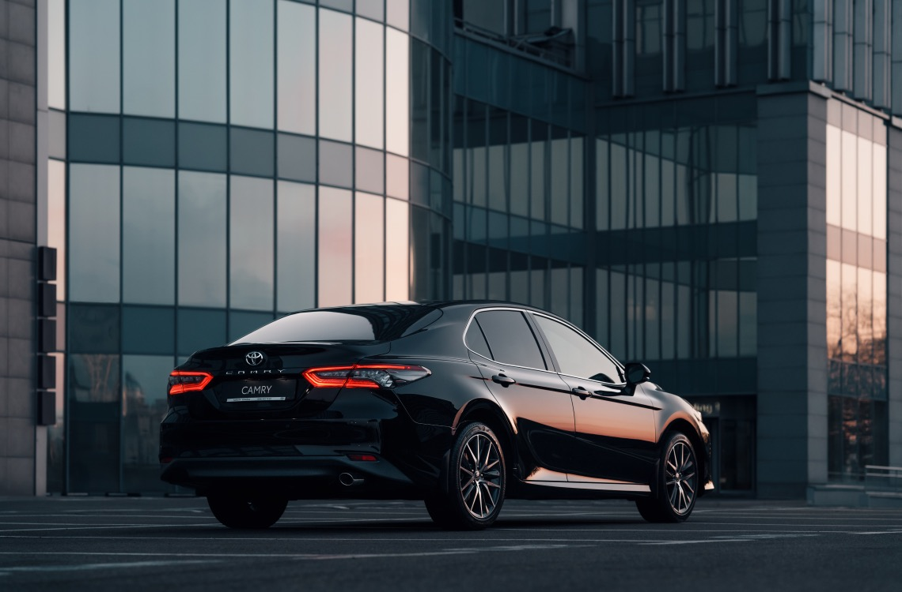
Toyota Camry
- a Japanese automobile corporation that enters the warehouse of the Toyota financial and industrial group. One of the largest automobile companies in the world.
Toyota Camry
- a Japanese automobile corporation that enters the warehouse of the Toyota financial and industrial group. One of the largest automobile companies in the world.
Technical Specifications:
- Engine: 2.5L 4-cylinder or 3.5L V6
- Power: 203-301 hp (depending on engine)
- Transmission: 8-speed automatic
- Fuel Efficiency: Up to 28/39 mpg (city/highway)
- Drive Type: Front-wheel drive (FWD), optional all-wheel drive (AWD)
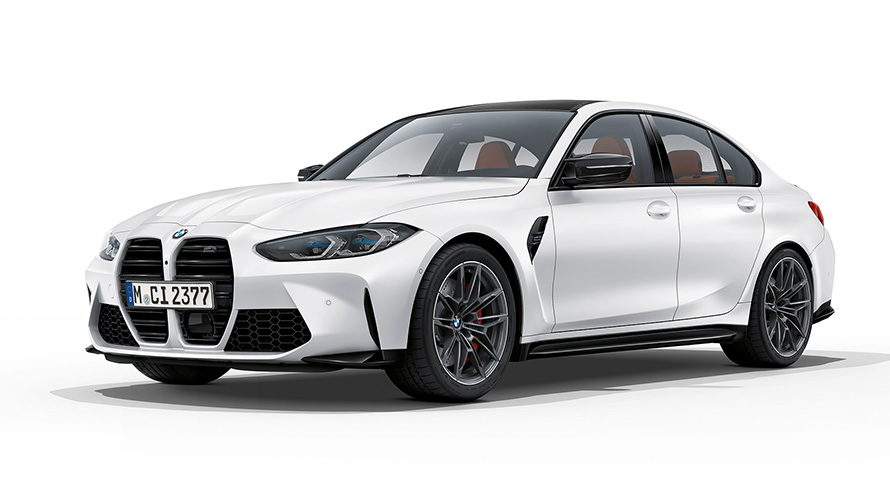
BMW M3
is a German manufacturer of cars, motorcycles, engines, and bicycles. More than 45% of the shares belong to the Quandt family.
Technical Specifications:
- Engine: 3.0L inline-6 twin-turbo
- Power: 473-503 hp (depending on variant)
- Transmission: 6-speed manual or 8-speed automatic
- Acceleration: 0-60 mph in 3.8-4.1 seconds
- Top Speed: 180 mph (electronically limited)
- Drive Type: Rear-wheel drive (RWD), optional all-wheel drive (AWD)
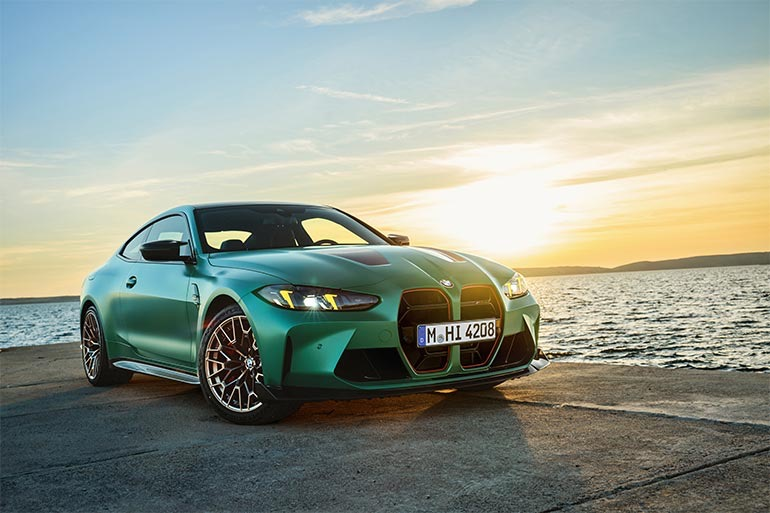
BMW M4
is a German manufacturer of cars, motorcycles, engines, and bicycles. More than 45% of the shares belong to the Quandt family.
Technical Specifications:
- Engine: 3.0L inline-6 twin-turbo
- Power: 473-503 hp (depending on variant)
- Transmission: 6-speed manual or 8-speed automatic
- Acceleration: 0-60 mph in 3.8-4.1 seconds
- Top Speed: 180 mph (electronically limited)
- Drive Type: Rear-wheel drive (RWD), optional all-wheel drive (AWD)
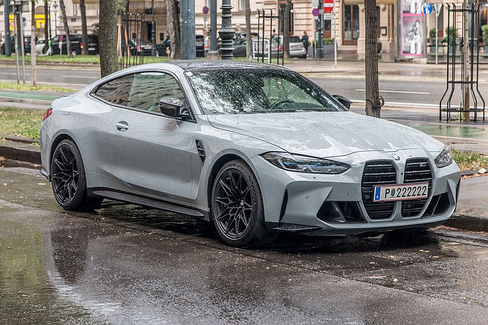
BMW M8
is a German manufacturer of cars, motorcycles, engines, and bicycles. More than 45% of the shares belong to the Quandt family.
Technical Specifications:
- Engine: 4.4L V8 twin-turbo
- Power: 600-617 hp (depending on variant)
- Transmission: 8-speed automatic
- Acceleration: 0-60 mph in 3.0-3.2 seconds
- Top Speed: 190 mph (electronically limited)
- Drive Type: All-wheel drive (AWD)
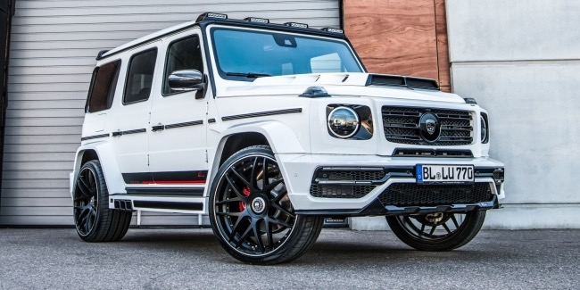
Mercedes AMG
- a manufacturer of premium cars, part of the Mercedes-Benz Group. It is one of the most recognizable automotive brands.
Technical Specifications:
- Engine: 4.0L V8 twin-turbo
- Power: 469-630 hp (depending on variant)
- Transmission: 9-speed automatic
- Acceleration: 0-60 mph in 3.1-4.1 seconds (depending on model)
- Top Speed: 155-200 mph (electronically limited)
- Drive Type: Rear-wheel drive (RWD) or all-wheel drive (AWD) available

Mercedes C-Class
- a manufacturer of premium cars, part of the Mercedes-Benz Group.
Technical Specifications:
- Engine: 2.0L inline-4 turbocharged
- Power: 255 hp
- Transmission: 9-speed automatic
- Acceleration: 0-60 mph in 5.9 seconds
- Top Speed: 130 mph (electronically limited)
- Drive Type: Rear-wheel drive (RWD) or all-wheel drive (AWD) available
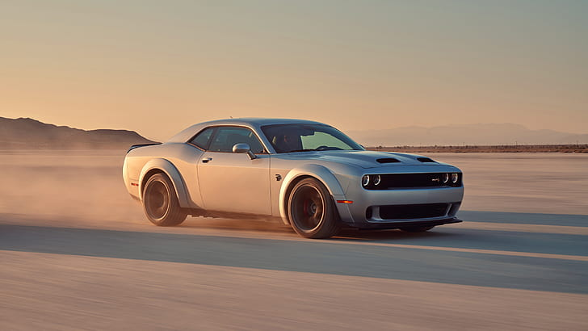
Dodge
is a brand of cars produced by the American company Chrysler. The company was founded in 1900.
Technical Specifications:
- Engine: 3.6L V6 or 5.7L HEMI V8 (depending on model)
- Power: 292-797 hp (depending on model)
- Transmission: 8-speed automatic or 6-speed manual
- Acceleration: 0-60 mph in 3.5-6.0 seconds (depending on model)
- Top Speed: 155 mph (electronically limited for some models)
- Drive Type: Rear-wheel drive (RWD) or all-wheel drive (AWD) available
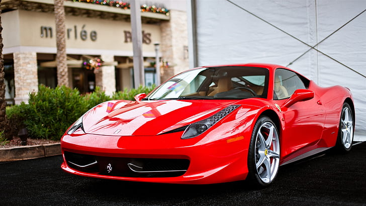
Ferrari
is an Italian company producing sports and racing cars, based in Maranello. Founded in 1939.
Technical Specifications:
- Engine: 3.9L twin-turbo V8 or 6.5L V12 (depending on model)
- Power: 590-850 hp (depending on model)
- Transmission: 7-speed dual-clutch automatic
- Acceleration: 0-60 mph in 2.5-3.0 seconds (depending on model)
- Top Speed: 211-211+ mph (depending on model)
- Drive Type: Rear-wheel drive (RWD) or all-wheel drive (AWD) available
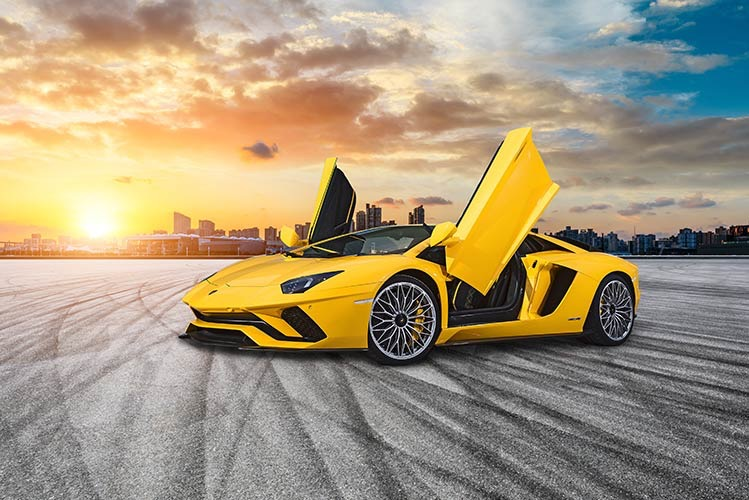
Lamborghini
is an Italian company that produces expensive sports cars. Founded in 1963 by Ferruccio Lamborghini.
Technical Specifications:
- Engine: 5.2L V10 or 6.5L V12 (depending on model)
- Power: 570-770 hp (depending on model)
- Transmission: 7-speed automatic with dual-clutch system
- Acceleration: 0-60 mph in 2.5-3.4 seconds (depending on model)
- Top Speed: 217-261 mph (depending on model)
- Drive Type: All-wheel drive (AWD) standard on most models
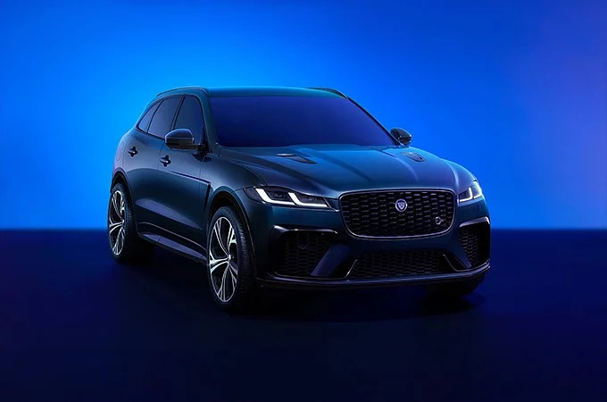
Jaguar
is a brand of the automobile manufacturer Jaguar Land Rover, owned by Tata Motors.
Technical Specifications:
- Engine: 2.0L turbocharged I4, 3.0L V6, or 5.0L V8 (depending on model)
- Power: 246-575 hp (depending on model)
- Transmission: 8-speed automatic
- Acceleration: 0-60 mph in 3.5-6.0 seconds (depending on model)
- Top Speed: 155-186 mph (electronically limited for some models)
- Drive Type: Rear-wheel drive (RWD) or all-wheel drive (AWD) available
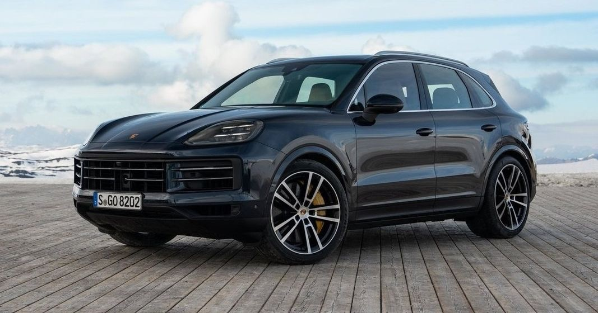
Porsche
is a German automobile manufacturer, founded in 1931 by designer Ferdinand Porsche.
Technical Specifications:
- Engine: 2.0L turbocharged flat-four, 3.0L twin-turbo flat-six, or 4.0L naturally aspirated flat-six (depending on model)
- Power: 300-650 hp (depending on model)
- Transmission: 7-speed dual-clutch automatic (PDK) or 6-speed manual
- Acceleration: 0-60 mph in 3.0-4.0 seconds (depending on model)
- Top Speed: 180-210 mph (depending on model)
- Drive Type: Rear-wheel drive (RWD) or all-wheel drive (AWD) available
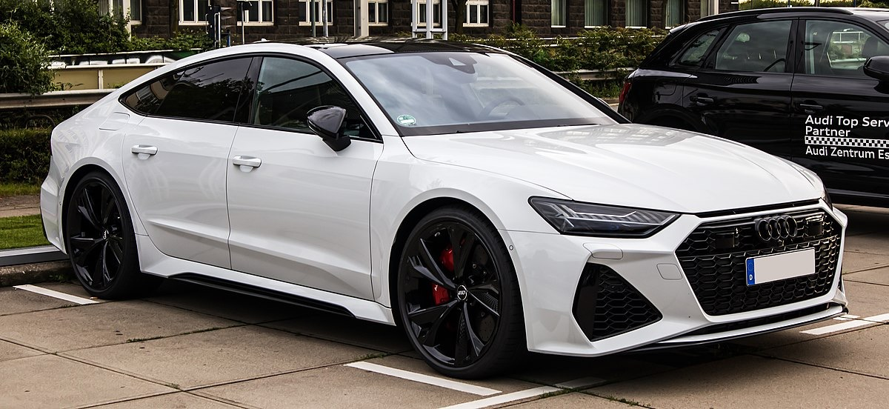
Audi
Audi AG is a German automotive company within the Volkswagen Group.
Technical Specifications:
- Engine: 2.0L turbocharged I4, 3.0L V6, or 4.0L V8 (depending on model)
- Power: 148-600 hp (depending on model)
- Transmission: 7-speed dual-clutch automatic (S tronic) or 8-speed automatic (Tiptronic)
- Acceleration: 0-60 mph in 3.0-6.0 seconds (depending on model)
- Top Speed: 155 mph (electronically limited for most models)
- Drive Type: All-wheel drive (AWD) is standard on many models (Quattro)

{kind=link}
{kind=link}
{kind=link}
{kind=link}
{kind=link}
{kind=link}
{kind=link}
{kind=link}
{kind=link}
{kind=link}
{kind=link}